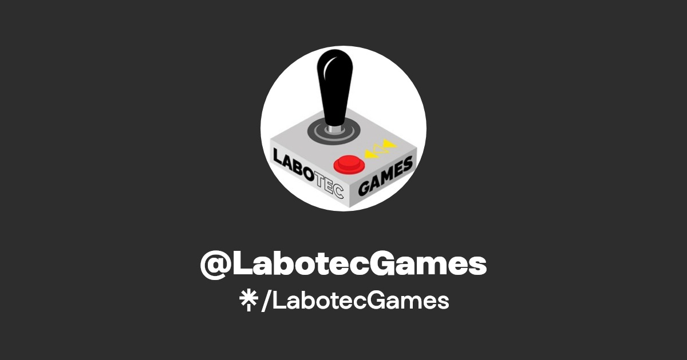

Unity and Unreal SDK plugin and multiplatform: Android, iOS, macOS, Windows, WebGL and visionOS
About
I hold a degree in Videogames Development from
Universidad Complutense de Madrid.
I have professional experience working with
HISPlayer,
NexPlayer and
Labotec Games.
Additionally, I gained extensive experience working on different projects during my college years.
These are some of the most notable projects I worked on:
CoreWar UCM,
DoppleBanger,
Papagayo Games,
Towertido,
Goblin Slayer and
Automatic Learning Project.
In both professional and academic fields, I have demonstrated a proven track record of developing quality code
to solve different tasks and problems. I have also shown my ability to work in different teams, initiative,
enthusiasm, social skills and leadership.
Overall, I particularly emphasize my strengths in project coordination and management, as well
as my ability to conduct large- or small-scale analysis.
This includes developing ideas and tackling the next small task that arises in the roadmap.
I consider it highly important to first think about how to approach the upcoming work.
Experience
Internship focused on SDK development for Unity and Unreal Engines...

Worked on Unity-based game development projects during my 3-month internship...
Projects
DoppleBanger
DoppleBanger
DoppleBanger